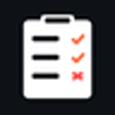
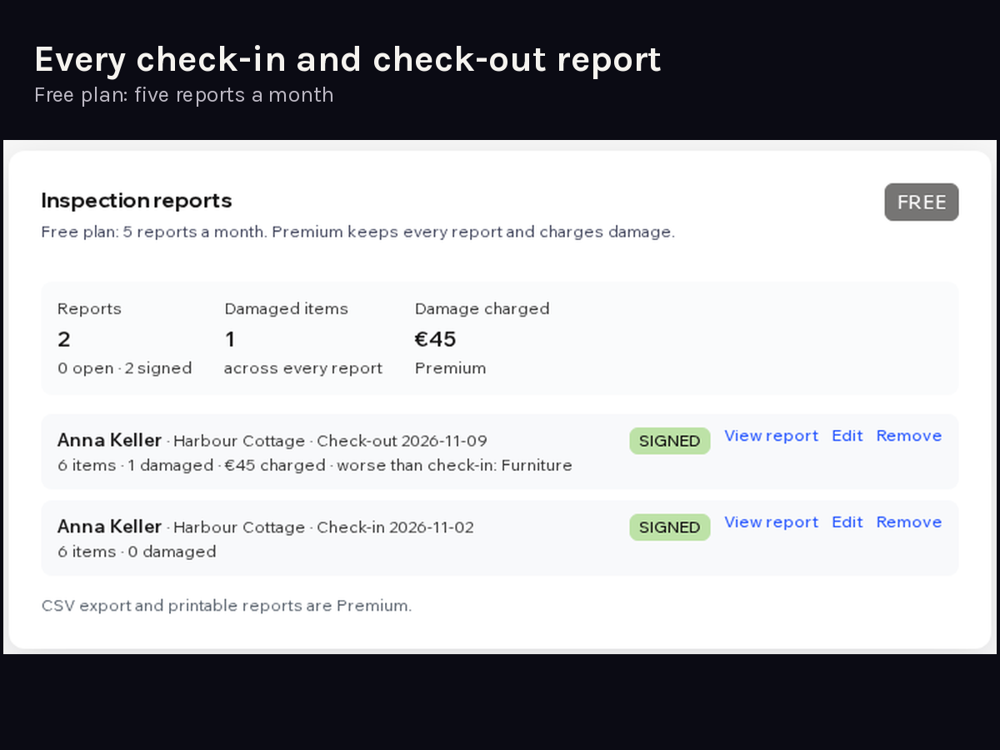

Inspection: Rental Damage
Check-in and check-out reports for rental damage
- Record the state of a rental at check-in
- Compare it with check-out and see what got worse
- Charge each damage line and sign the report
- Free: one property and five reports a month

What it does
A rented property or item goes out in one condition and comes back in another. When something is damaged, the owner needs proof of its condition at check-in and check-out and what the damage costs, before the deposit goes back. This app keeps that record.
Set up each property once with its checklist: the rooms or items you check, and the state you expect. When a tenant arrives, record a check-in and mark each line good, fair wear or damaged, with a note where it matters. At check-out, record the same list. The app finds the matching check-in by property, tenant and reference, and shows only the lines that got worse, so the damage is clear.
Each damaged line carries an amount, and the total is added up. The report has a line for the tenant's signature, and prints or exports to CSV. Reports stay on your site, and the dashboard shows the open reports and the damage charged.
Free covers one property and five reports a month, with the checklist and on-screen report. Premium adds every property and report, the check-in against check-out comparison, damage charges, the printable signed report and CSV export. Premium is $5 a month, or $4 a month billed yearly, with a 14-day free trial.
Price
Free
- 1 property, 5 reports a month
- Checklist with conditions and notes
- On-screen report, signed by the tenant
- Damage charges and the comparison need Premium
Premium
- $5/month, or $4/month billed yearly ($48/year), 14-day free trial
- Every property, every report
- Check-in against check-out, only the worse lines
- Damage charges and totals
- Printable signed report and CSV export